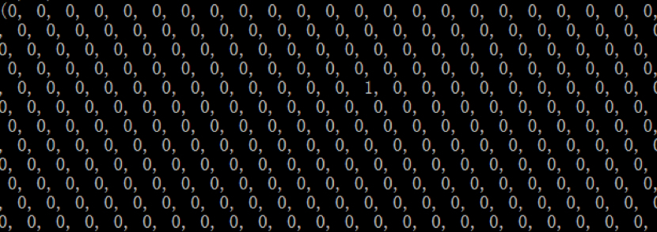
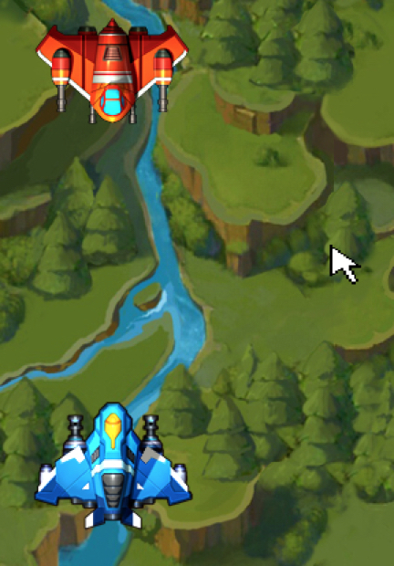

- 00 开篇词 跟我学，你也可以开发一款游戏！.md.html
- 复习课 带你梳理客户端开发的三个重点.md.html
- 第10讲 如何载入“飞机”和“敌人”？.md.html
- 第11讲 如何设置图像的前后遮挡？.md.html
- 第12讲 如何设置精灵的变形、放大和缩小？.md.html
- 第13讲 如何设置淡入淡出和碰撞检测？.md.html
- 第14讲 如何制作游戏资源包和保存机制？.md.html
- 第15讲 如何载入背景音乐和音效？.md.html
- 第16讲 如何在游戏中载入UI和菜单？.md.html
- 第17讲 如何用鼠标和键盘来操作游戏？.md.html
- 第18讲 如何判断客户端的网络连接？.md.html
- 第19讲 如何嵌入脚本语言？.md.html
- 第1讲 游戏开发需要了解哪些背景知识？.md.html
- 第20讲 脚本语言在游戏开发中有哪些应用？.md.html
- 第21讲 如何使用脚本语言编写周边工具？.md.html
- 第22讲 如何选择合适的开发语言？.md.html
- 第23讲 如何定制合适的开发协议？.md.html
- 第24讲 不可忽视的多线程及并发问题.md.html
- 第25讲 如何判断心跳包是否离线？.md.html
- 第26讲 如何用网关服务器进行负载均衡？.md.html
- 第27讲 如何制作游戏内容保存和缓存处理？.md.html
- 第28讲 热点剖析（一）：HTML5技术是如何取代Flash的？.md.html
- 第29讲 热点剖析（二）：如何选择一款HTML5引擎？.md.html
- 第2讲 2D游戏和3D游戏有什么区别？.md.html
- 第30讲 热点剖析（三）：试试看，你也可以编写一款HTML5小游戏！.md.html
- 第31讲 热点剖析（四）：安卓端和苹果端游戏开发有什么区别？.md.html
- 第32讲 热点剖析（五）：如何选择移动端的游戏引擎？.md.html
- 第33讲 热点剖析（六）：AR和人工智能在游戏领域有哪些应用？.md.html
- 第34讲 热点剖析（七）：谈谈微信小游戏的成功点.md.html
- 第35讲 热点剖析（八）：谈谈移动游戏的未来发展.md.html
- 第36讲 热点剖析（九）：谈谈独立开发者的未来发展.md.html
- 第3讲 游戏的发动机：游戏引擎.md.html
- 第4讲 底层绘图接口的妙用.md.html
- 第5讲 构建游戏场景的武器：地图编辑器.md.html
- 第6讲 从0开始整理开发流程.md.html
- 第7讲 如何建立一个Windows窗体？.md.html
- 第8讲 如何区分图形和图像？.md.html
- 第9讲 如何绘制游戏背景？.md.html
- 结束语 做游戏的过程就像是在雕琢一件艺术品.md.html
- 课后阅读 游戏开发工程师学习路径（上）.md.html
- 课后阅读 游戏开发工程师学习路径（下）.md.html
- 捐赠
第17讲 如何用鼠标和键盘来操作游戏？
如果一款游戏不能用鼠标和键盘操作，那我们只能当动画来看。
所以在一款游戏中，鼠标和键盘的操作是必不可少的，有时候甚至鼠标和键盘都要同时操作，比如FPS游戏，比如即时战略等等。鼠标和键盘的操作在Pygame中需要进行实时检测，这个上一节我有提到过，然后我们就可以对游戏画面进行操作。
我们在Pygame中有两种方式可以检测和编写键盘事件，一种是使用event事件操作，一种是使用keypressed函数来进行键盘的判断操作。
我们先来尝试一下使用事件进行操作的键盘事件。我们在之前的代码中，已经使用事件来判断是不是退出，我们来看如下代码：
for event in pygame.event.get():
if event.type == QUIT:
pygame.quit()
在这段代码里面，event.type的类型如果是QUIT的话，就让pygame退出，那么举一反三，我们也可以在里面写上如下代码：
if event.type == KEYDOWN:
if event.key == pygame.K_w:
.....
在这里，我们判断事件的类型是KEYDOWN，也就是键盘按下的事件，随后我们再在下面的代码里,判断event所返回键盘key值，是pygame.K_w，这个K_w是pygame里面定义的虚拟键盘的按键，代表的是Key值为键盘w的按键，所以你只要按下w键，就会出现对应的操作。
我们来写下一系列的操作代码，在编写代码之前，我们首先要来定义一下规则。
我们的目的，是要让主角的飞机移动起来，所谓的飞机的移动，我们在前面几篇课程里面都有阐述。如果我们要让飞机在画面上移动起来，就需要修正飞机的x轴和y轴。
相应的，如果飞机往左侧飞，就需要减少飞机的x轴；如果飞机往右侧飞，就要增加飞机的x轴；如果往上面飞，就要减少飞机的y轴；如果往底下飞，就要增加飞机的y轴。我们先理清楚了这些内容之后，就可以编写键盘操作代码了。
我们先来修正飞机的x轴和y轴。我们要在游戏的循环之外，定义两个变量xx和yy，以修正键盘操作后的飞机坐标。
xx = 0
yy = 0
在定义完了这些内容后，我们再来看看按键的定义。
if event.type == KEYDOWN:
if event.key == pygame.K_w:
yy -= 1
if event.key == pygame.K_s:
yy += 1
if event.key == pygame.K_a:
xx -= 1
if event.key == pygame.K_d:
xx += 1
首先，和普通的游戏一样，我们将电脑键盘上的WSAD按键用作上下左右的操作按键，所以我们判断了一系列的按键值，比如K_w，K_s等等，然后我们看到，xx, yy 的一系列操作，然后我们进行飞机的贴图和操作：
screen.blit(pln, (100+xx, 300+yy))
我们看到，基础坐标值是（100，300）。我们经过键盘操作，对xx和yy进行位置的修正。到这里为止，我们可以看到，只要我们按下WSAD中的任意一个按键，飞机就会往指定的位置移动。
所以如果你认为到这里按键的内容就结束了，那就错了，就像我们今天开头所说的，Pygame下的键盘类，还有另外一种方式可以检测，你可以考虑下面的代码。
key = pygame.key.get_pressed()
if key[pygame.K_w]:
yy -= 1
if key[pygame.K_s]:
yy += 1
if key[pygame.K_a]:
xx -= 1
if key[pygame.K_d]:
xx +=
是的，我们看到了pygame.key.get_pressed(); 函数。这个函数返回一个Key值。和event事件不同的是，我们直接可以在每一次循环内进行判断。返回的Key是一个tuple类型，在里面存放了各种按键对应的值。如果没有按键，所有值都是0；如果有按键，其中一个值是1。
再来看接下来的代码，如果key值的tuple里正好是pygame.K_w的话，那么判断结果就是真，我们来将这个内容打印出来看一下。
print key
我们打印了key，并且按下w按键，随后，我们可以在游戏界面命令行看到如下内容输出：
- 找到那个1没有？那个1，就是对应的K_w值，在key[pygame.K_w]判断的时候，返回一个1，也就是True，那么就产生yy-=1的操作。接下来就是类似的代码了，我就不再作重复的阐述了。
看到这里，或许你就要问了，那有很多的游戏都有组合键，比如我按下Ctrl键，再按下w键，就会出现对应的操作，这又该怎么实现呢？
你思考一下，我们是不是可以把两个按键写在同一个判断语句下？是的，你没有猜错，确实可以这么写，这就是组合键的效果。
if key[pygame.K_w] and key[pygame.K_LCTRL]:
yy -= 2
在这里我们看到，只要同时按下了w和左侧CTRL，（LCTRL的意思是Left Control，就是左侧Control的意思），那么yy的坐标值就减去2，我们操作一下就知道结果了。所以，组合键可以在同一个判断里面，使用and连接起来。
然后，事情并没有到这里结束，请你将这些代码写在自己的电脑里，并做一下实验，第一种方式是事件判断，第二种方式是按键判断。这两种方式的区别是什么？
看到区别了吗？如果你按照我说的去做，你会发现，第一种方式，只要按下一个键，飞机就会往指定方向移动一格，然而如果你一直按着这个键，飞机是不会移动的，要等你再按下键盘才行。而第二种方式，只要你一直按着这个键，飞机就会一直不停往指定位置移动。
问题究竟出在哪里呢？
问题在于，事件判断首先判断了KEYDOWN，当你按下按键的时候，KEYDOWN已经被判断了，随后我们再进入event的按键类型的判断，但是如果你这时候一直按着键盘，KEYDOWN事件并没有被唤起，所以一直按着按键并没有起到作用，所以你要按下键盘，松开，再按下一次，飞机才会移动。
而第二种方式，在循环里面，只要键盘按下去，就会一直返回一个tuple给key，然后在继续做判断，所以，我们只要一直按着键盘，一直会做判断，直到按下的键盘是WSAD为止。
接下来，我们要做一下鼠标的操作。鼠标的操作我们在前几次的课程中也进行了介绍，我们再来温习一遍，并且添加一些新的内容进去。
我们今天要把一幅图片贴在鼠标的位置，并且随着鼠标的移动而移动，我们先来看下列代码：
mouse = 'mouse.png'
mouse_cursor = pygame.image.load(mouse).convert_alpha()
mouse_scale = pygame.transform.scale(mouse_cursor, (40, 40))
While True:
#获取 x, y 值
x-= mouse_scale.get_width() / 2
y-= mouse_scale.get_height() / 2
screen.blit(mouse_scale, (x, y))
...
首先我们要定义的一幅图片名叫 mouse.png，随后载入图片并且处理alpha混合，这在我们先前的课程中都有过阐述。
随后我们看到了一个叫pygame.transform.scale的函数。这个函数的意思是，我们要重新将mouse这个surface进行缩放，其中缩放的大小长宽是（40，40），并且返回一个新的 surface。
随后在循环里，我们获取到这个surface的中心点，也就是计算需要绘制鼠标的x，y值，我们需要得到图片的长宽，并且除以2，最后blit开始贴图，我们看到的效果是这样的。

那么我们如果要判断鼠标的按键怎么办呢？我们来温习一下上一次所讲的内容，鼠标的按键，也是类似的判断方式：
x, y = pygame.mouse.get_pos()
if pygame.mouse.get_pressed()[0]:
....
前面那段代码用到的 x，y的值，在这里进行代码获取。
我们看到，pygame.mouse.get_pos() 函数，获取两个值，x和y坐标，后面一段代码就是获取鼠标点击的内容，其中 get_pressed函数下标0返回是不是左键点击，下标1返回是不是中键点击，下标2返回是不是右键点击，最后再做出判断。
小结
今天的内容基本到这里了，我带你将内容梳理并总结一下。
首先是键盘事件判断，这里会出现按一下键盘做一下操作的情况，问题出在KEYDOWN事件判断上。但是如果你需要一直按键的判断，可以使用get_pressed函数。
组合键可以写在同一个判断下，使用and连起来做判断。
get_pressed会返回一个tuple，里面存放了所有的key值，只要判断key值是不是为True就是判断了有没有按键。
鼠标操作也可以使用get_pressed函数，也是返回tuple，其中下标0、1、2分别代表了左、中、右三个按键。
最后，给你留一个小问题。
如果将组合键写在第一个按键的判断下，会出现什么情况？
if key[pygame.K_LCTRL]:
if key[pygame.K_w]:
...
欢迎留言说出你的看法，我在下一节的挑战中等你！
© 2019 - 2023 Liangliang Lee. Powered by gin and hexo-theme-book.